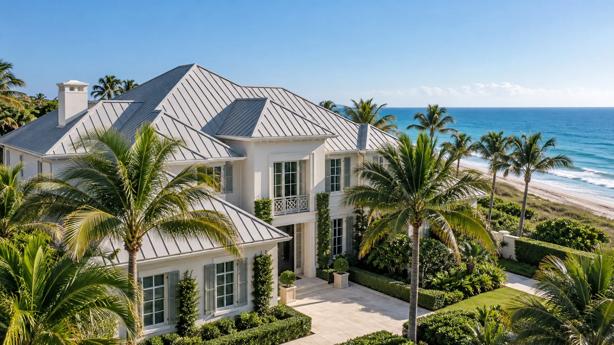

Residential roofing
Roof replacement and installation planned around your home's character and the coastal climate.
Explore residential roofingPalm Beach, Florida
Roof replacement, inspections, and storm repairs for homes along the Palm Beach coast.

Roofing shaped by life on the coast
Serving the Palm Beach areaEvery home has its own needs. Our work begins with understanding the property, the materials, and the conditions it faces.
Roof replacement and installation planned around your home's character and the coastal climate.
Explore residential roofingA closer look at wear, weather exposure, and the details that deserve attention before they grow.
Explore roof inspectionsThoughtful repair planning after severe weather, with a clear path from assessment to finished work.
Explore storm restorationThe best roofing decisions balance protection, appearance, and the realities of the property. We make room for each of them.
We look at the roof in the context of the entire property.
Materials, scope, and next steps should be easy to understand.
Details matter from the first inspection through the final review.
Palm Beach · West Palm Beach · Palm Beach Gardens